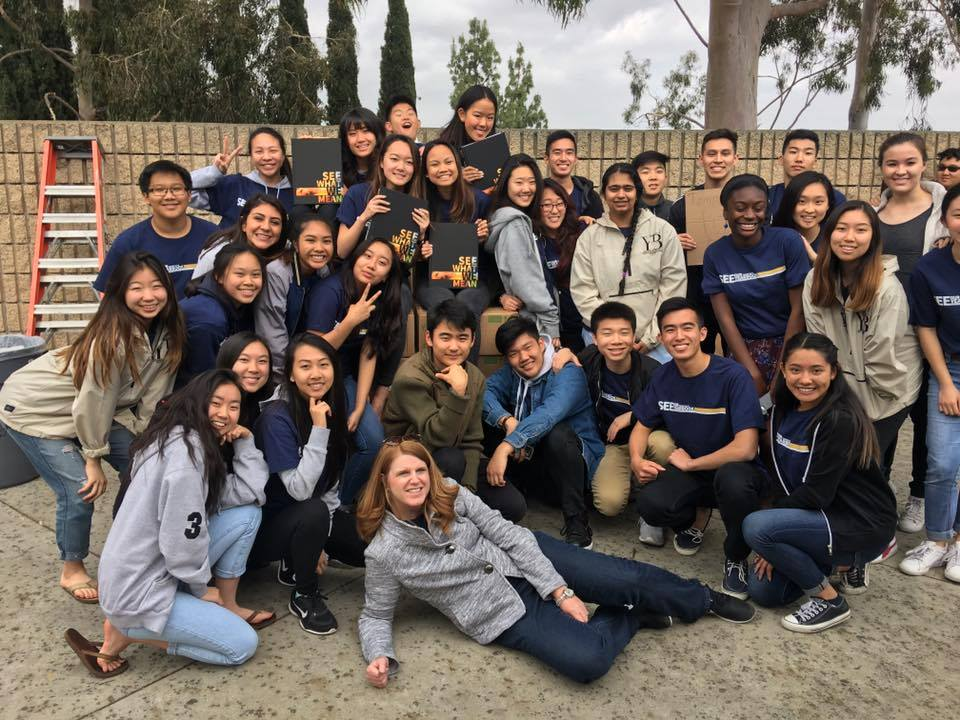
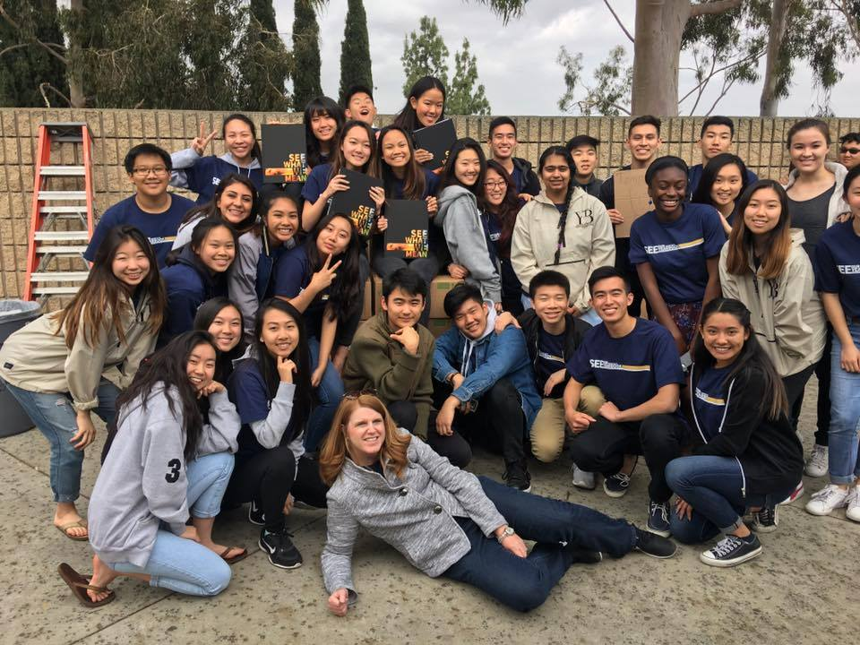
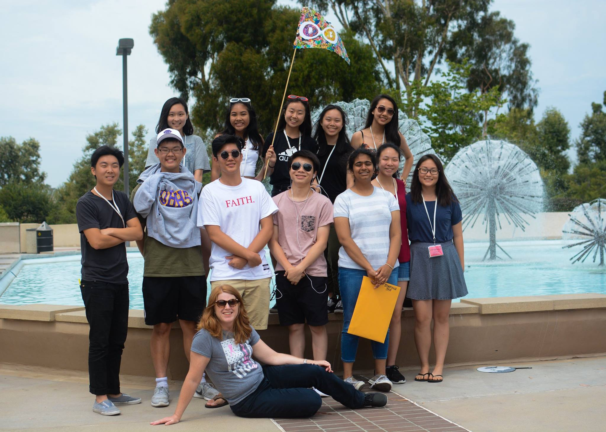
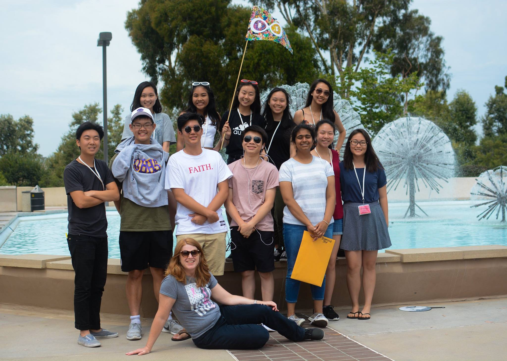
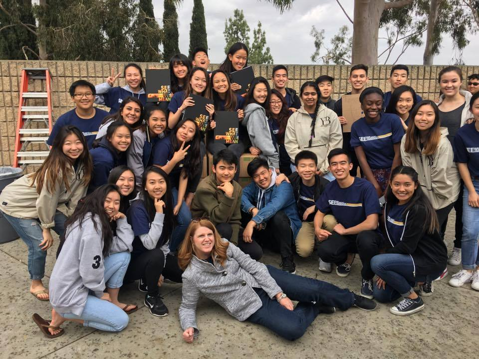
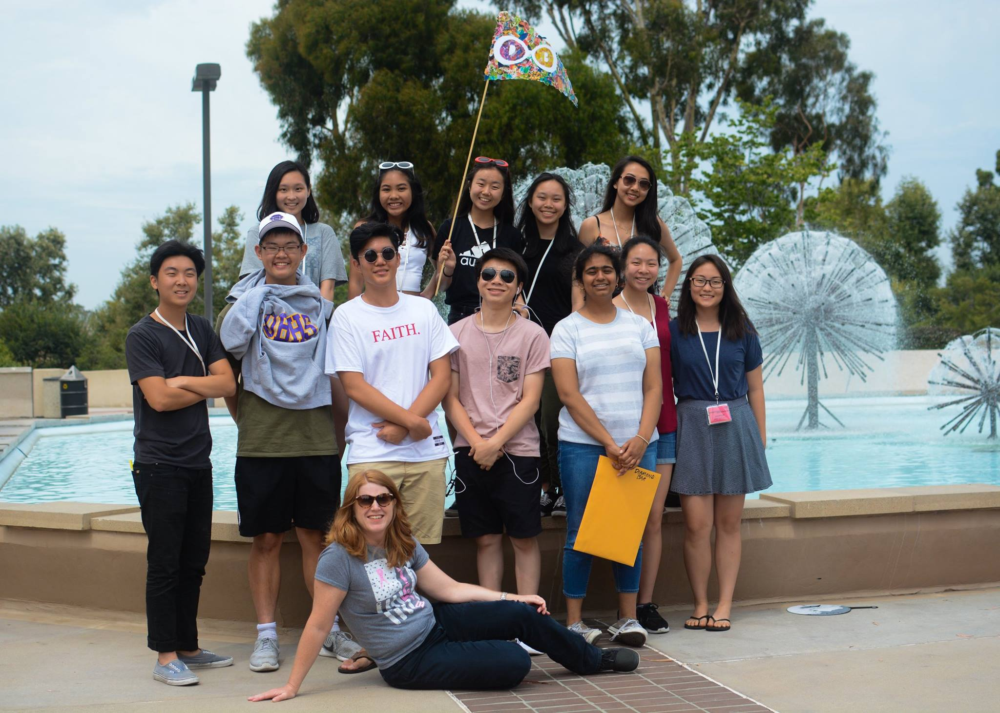

Nathan Lee
I'm currently a second year University of California - Riverside student. My major is in pre-business, and I plan on concentrating in management because my greatest professional skills are soft skills involved with working with people. I’m a very social-oriented person, as I enjoy making connections with others and inspiring them in whatever way I can. I especially like to work in group settings, taking a role of leadership in which I can empathize and delegate roles to suit my teammates the best. Some of my greatest professional aspirations include inspiring others around me to work to the best of their ability, and to push themselves to accomplish great things for our organization.
To get to know me, I have a diversity of hobbies. I tend to get in intense phases of passion, in which I focus all my attention on what I enjoy most. Some of my hobbies include creative writing, digital art, music production, boxing, and fitness. One of my oldest passions is music appreciation. I enjoy listening to a diverse range of genres ranging from hip-hop to classical music. It’s a hobby from my childhood, and has stayed with me longer than anything. Through music I can connect to those around me, as if it’s a language that transcends words. I’ve made many friendships solely through my taste in music.
My career goal is to work in the business side of the music industry. Because music is such a big passion of mine, I’d like to stay as close to it as possible, even in my professional life. I want to work in a position in which others share the same passion as me, and want to affect the lives of others by promoting an artist’s hard work to the public.
Experience
Usher and Concessions
• Learned valuable customer service skills to provide them the best experience and uphold the image of my company
• Trained new employees to work efficiently
• Checked inventory of products
Sports Editor
• Responsible for delegating tasks to subordinates based on their personalities and strengths
• Obtained soft project managerial skills by leading others to complete tasks under pressure to meet deadlines
• Learned Adobe PhotoShop, InDesign, journalistic writing, and photography skills
Education
UC Riverside
Portfolio
 

 


